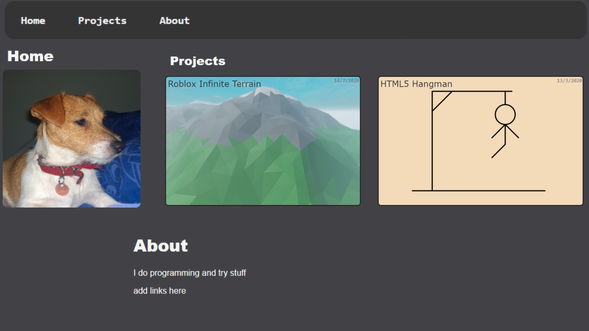

Github Pages Website

After stumbling upon
david.li
i wanted to make my own website to showcase my own finished projects.
So i made this, and after a lot of trial and error i got it to look decent (in my opninion).
In the about section i use the icons from the websites themselves.
Under projects i made it so that it's easier to add projects or change how they all look using javascript.
After a day or two i got it to the point that previous and this project have a page with some functionality, and i released it.
A link to the
Github Repository
of the website.